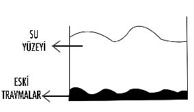
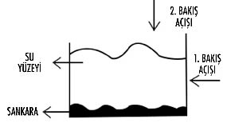
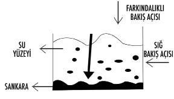

Loa
Adım VIII: GEÇMİŞİ TEMİZLEMEK ESKİ TRAVMALARIN YÜKÜ HAFİFLİYOR...
YÜK
Günün birinde derviş; geçmişi temizlemek ve eski travmaların ağır yüklerinden kurtulmak konusunun neden önemli olduğu hakkında bilgi sahibi olmak ister ve konuyu hocasına sorar... Hoca da, öğrenciye zamanı geldiğinde iyi bir ders vereceğini söyleyerek şimdilik genç adamın merakını havada bırakır.
Aradan bir müddet geçmiştir ki derviş ve hocası doğada gezinti yaptıkları sırada karşılarına bir kadın çıkar. Kadın, yolunu kesen nehirden tek başına geçemediğini, yardıma ihtiyacı olduğunu söyler. Genç derviş, tarikat kaidelerine göre kadınlara dokunmak yasak olduğundan, karşısına çıkan bu hanımın yardım talebine kulak asmadan tek başına nehri aşıp karşıya geçer. Derviş, hocasının gözünde takdir edilecek bir iş yaptığını düşünerek dönüp ardına bakar ki, bir de ne görsün! Hoca kadını kucağına almış ve onunla sohbet ederek güle güle nehri aşmaktadır... Derviş gördüğü şeye bir türlü inanmaz. Şaşkınlıkla olan biteni izler. Hoca kucağında kadınla nehri aşar ve kibarca hanımı yere indirerek öğrencisiyle yoluna devam eder.
Aradan tam 27 yıl gelip geçer ve bir zamanların genç dervişi artık tarikatın hocası olmuştur. Bu adamın biricik emektar hocası da yazık ki artık ölüm döşeğindedir. Hocasına veda etmek üzere yanına gelen eski öğrenci, biraz durup dinlendikten sonra ona şunu sorar: “Değerli hocam. Bunca yıldır aydınlanmam yolunda öğrettiğiniz pek çok konuyu idrak edebildiğimi düşünüyorum. Lakin bir mevzu var ki tam 27 yıldır kafamın içinde dolanıp duruyor. Sizinle bir gün ormanda dolaşırken nehri geçebilmek için bizden yardım isteyen bir kadına rastlamıştık. Kadınlara dokunmamız yasak olduğu halde siz onu nasıl oldu da kucaklayarak nehirden geçirdiniz ve ardından yere indirip, hiçbir şey olmamış gibi yola devam ettiniz?” Son nefesini vermek üzere olan hoca, o gün öğrencisinin kendisine geçmişi temizlemenin ve eskinin ağır travmalarından kurtulmanın önemi hakkında soru sorduğunu hatırlattı. Evet, öğrenci 27 yıl önce, tam da o gün bu konuyu hocasına sormuş ama yanıtını alamamıştı. Bu soruyu şimdi yanıtlamak istediğini söyleyen hoca, “Bak evladım. Bu da sana son dersim olsun. Ben 27 yıl önce o kadını kucağıma aldım, ancak nehri geçtikten sonra onu yere indirip bıraktım. Oysa sen 27 yıldır bu kadını sırtında taşımaya devam ediyorsun. İşte geçmişin yükünden kurtulmak bu yüzden önemlidir” der...
“Geçmişi temizlemek” demek, yaşanan anları ya da anıları tek tek avlayarak onları zihin dağarcığından kovmak ve bir daha da hatırlamamak değildir. Çok insanın bu türden bir çaba içinde olduğunu biliyorum. Bana gelen hastaların çoğu “Metin Bey, ben geçmişimi tamamen unutmak istiyorum. Lütfen benim hafızamı temizleyin. Beni kurtarın” talebinde bulunurlar.
“Unutmak çabası” ne bir hedeftir, ne de iyileşme yöntemlerinden biri sayılabilir.
Unutmayı seçtiğin, hatırlamamaya çalıştığın ve ödevini görmezden geldiğin her dersi yeniden almak zorunda kalırsın...
“Geçmişi temizlemek” ile “geçmişi unutmak” arasında çok büyük bir fark vardır ve olması gereken onu unutmak yerine temize çekmektir.
Yaşadığın eski, kötü ve acıklı olayların, durumların ya da deneyimlediğin kişilerin üzerine koyduğun “HİS DEMETLERİ” ortadan kalktığı vakit, bu travmaların sana yaşattığı bütün olumsuzluklardan ve kurban bilincinden özgürleşirsin.
Geçmişi unutmak yerine, yaşananlarla barışmayı seçmek iyi bir hamledir. Bunu başardığın vakit gerçek bir uyanıştan söz edebiliriz...
Yaşanan travmaların üzerindeki his demetlerini ortadan kaldırmaktan bahsederken ne anlatmak istediğimi şimdi vereceğim örneklerle çok daha iyi anlıyor olacaksın.
Bir dönem, ambulans sesi duyduğumda, babamın paramparça olmuş bedeni ve kapalı şuuruyla beni bile tanımaz halde ambulans aracından indirildiği an gözümün önüne gelip dururdu. Babam geçirdiği trafik kazasından sonra vücudunda 40’ın üstünde kırıkla ve bilinci kapalı halde kaza alanından taşınırken, onun elini tutmuştum ve görevliler tarafından alınıp götürülünceye dek gözlerini açıp beni tanımasını beklemiştim. Kalbimi ve kulaklarımı delip geçen o ambulansın sesi, zihnimde öyle hüzünlü bir yere işaret ediyordu ki artık o sireni her duyduğumda hatırladığım tek şey babamın paramparça bedeni ve avucumun içinden kayıp giden yaralı eli oluyordu.
Çok uzun süre filmlerde bile ambulans sesi duyduğum vakit, babamın parçalanışını ve hayatımızın zora giriş sürecini hatırlayıp durdum. Her hatırladığımda da o gün hissettiğim acıyı ve korkuyu yaşadım.
Aslında duyduğum ilk siren, babamla ilgiliydi. Babam kaza yerinden alınıp hastaneye götürüldüğü vakit o ambulansın görevi de tamamlanmıştı. Bu olaydan sonra duyduğum hiçbir ambulans sireninin babamla ilgisi olmadığı halde zihnim ikisi arasında güçlü ve duygusal bir bağlantı kurduğundan duyduğum ve gördüğüm her ambulansta babamın yaşadığı kazayla sarsılıyordum.
İşte burada benim için normal olmayan bir durum vardı. Geçmişte yaşadığım bir travmayı ait olduğu yerde bırakmama engel olan, onu şimdiki anımın içine, o günkü duygularla taşıyan işaretler vardı. Benim için ne geçmişi, geçmişte bırakmak mümkündü, ne de o kederli duygunun tesirinden kurtulmak...
İnsanlar, genel olarak anlara ve anılara işaret koyarlarken şarkıları kullanmayı da sıkça tercih ederler. Dolmuşta bir şarkı duyduğun ve o şarkıyla birlikte eski sevgilini hatırladığın olmuştur. Aslında çalan şarkılar nötrdür... Onların üzerine işaretler koyan ve his demetleri yükleyen kişi sensindir. Zihnin o şarkıyla birini ya da bir anıyı senin için kodladığından, bu şarkıyı her duyduğunda anılar arşivinden o şarkının anları ve duyguları iner aşağıya...
Daha önce Terkos Pasajı’nda kıyafet seçmek konusundaki hünerinden bahsettiğim İtalyan Liseli kız arkadaşımla genelde Pera’daki Dilek Pastanesi’nde buluşup yemek yerdik. Ayrıldıktan kısa bir süre sonra Taksim’de yürürken, Dilek Pastanesi’nin önünden geçtiğim sıra eski kız arkadaşımla buradaki buluşmalarımız film şeridi gibi gözümün önünden gelip geçmeye başladı. Kısa bir süre için bile olsa, o dönemde hissettiğim duyguları yaşadım. Bu mekânı onunla özdeşleştirmiştim ve önünden her geçtiğimde de aklıma sadece ortak anılarımız geliyordu.
Yaşadığın geçmişle barışmadığın ve ona karşı kırgın ve tepkili kaldığın sürece ayaklarına dolanan prangaların ağırlığıyla yol almak zorunda kalırsın.
Bir dönem oldukça travmatik bir ilişkim vardı ve kız arkadaşım bana şöyle bir cümle kurmuştu: “Metin ben de seni çok seviyorum ama sen o kadar çok seviyorsun ki ben bazen seni yeterince sevdiğimi hissedemiyorum...” Bu anıyı hayli uzak bir geçmişte bıraktığımı düşünürken yıllar sonra başka bir kız arkadaşımla baş başa otururken aynı cümlenin havada yankılandığını duydum. Yeni kız arkadaşım da “Metin ben de seni çok seviyorum ama sen o kadar çok...” demeye başladığı an bunun gerçek olamayacağını düşünüp ayağa kalktım, sandalyeyi itip masadan uzaklaştım ve kendimi dışarı atıp yürümeye başladım... Aslında o an karşımda konuşan kızla yaşadığım ilişkiyi değil, yıllar önce bana aynı cümleyi etmiş eski kız arkadaşımla olan beraberliğimi yaşıyordum. Mesele masada yalnız bıraktığım sevgilimde değildi, geçmişten peşime takılmış olan ve benimse henüz barışmamış olduğum bir travmadaydı.
Yaşadığın AN’ın içine geçmişten gelen kırgınlıkları taşıyorsan, özgür değilsindir ve yaşadığın şeyle henüz barışmamışsın demektir.
Bu yolculukta geçmişini de kendinle birlikte taşımazsan;
yükün daha az olur...
Bugün, geçmişten taşıdığım pek çok ana korkumun ve travmamın üzerine gidip onları çözerek temizlemeye çalışmış bir adam olarak sana şunu rahatlıkla söyleyebilirim ki, ardıma baktığımda yaşadığım hiçbir şeyi unutmadım, fakat onları hatırlarken ya da anlatırken başka birinden bahsediyormuşum gibi dengeli ve sağlıklıyım...
Etrafımdaki insanlar bana çok zaman “Metin sen aldatıldığını, haksızlığa uğradığını, annenin kanser olduğunu, babanın trafik kazasında parçalandığını, aşk acılarını o kadar rahat anlatıyorsun ki sanki başka birinden bahsediyorsun. Sen gerçek duygularını saklayacak kadar iyi bir oyuncu olmuşsun” derler. Aslına bakarsan ben çok kötü bir oyuncuyumdur. Fakat bütün bu anılarımı anlatırken bir yabancıdan bahsettiğim gibi konuştuğum da doğrudur. Çünkü ben yaşadığım olayların üzerindeki his demetlerini ortadan kaldırdım. Alma-Verme dengem de yerinde olduğu için, geçmişimi hatırlamak ya da düşünmek beni aşağı çekmediği gibi güç de veriyor.
Olayların üzerindeki travmatik his demetlerini temizlediğinde hatırlamak için geriye sadece güzel ve keyifli şeyler kalır.
Geçmişi temizlemenin önemini anladıysan, bence artık bunun nasıl yapıldığını da öğrenmenin zamanı geldi.
Öğreteceğim bu meditasyon, geçmişinle barışmak ve onu temizlemek konusunda sana çok yol kat ettirecektir.
Meditasyon sırasında ağlama hissi duyabilirsin. Bu gayet normal bir tepkidir ve bence meditasyonu terk etmediğin sürece gözyaşı dökmenin herhangi bir sakıncası yok.
GEÇMİŞİ TEMİZLEME MEDİTASYONU:
Derin nefesler al ve rahatla...
Ayaklarından başlayarak yavaş yavaş rahatladığını hisset. Bacakların, kalçan, sırtın, karnın, omuzların, kolların gevşesin. Boyun ve yüz kaslarının da rahatladığından emin ol.
Artık kendini uçsuz bucaksız yemyeşil bir bahçenin ya da ormanın ortasında hayal edebilirsin... Bu cennet parçasının içinde yürüdüğünü, temiz havayı içine çekerek keyif aldığını, mutlu olduğunu ve çocuklar gibi eğlendiğini izle...
Şimdi bu alan içerisinde dilediğin bir yere doğru yürü ve çok hoşuna gittiğini düşündüğün bir yerde dur. Elinde polaroid bir fotoğraf makinesi tutuyorsun. Bu makine çektiğin bütün fotoğrafları anında basıp çıkarabilecek. Onunla zihnindeki bazı anların fotoğraflarını çekmeye hazırlanıyorsun.
Bugüne kadar yaşadıkların içinde seni çok üzdüğünü, hayatını etkilediğini ve canının çok yandığını hissettiğin bir travmanı korkmadan ve taraf tutmadan zihninde canlandır. Olayın geçtiği mekânı, zamanı, eşyaları ve olayda rol alan kişileri birer birer gör. Onlara bak. Kendini hazır hissettiğin an bu travmanın bir sahnesinin fotoğrafını çek. Makineden çıkan fotoğrafı al ve sakince yeşil çimenlerin üzerine bırak.
Bu kez başka bir travmanı zihninde canlandır ve onun da fotoğrafını çekip yanı başında duran diğer fotoğrafın üzerine koy...
Seni mutsuz ettiğini, hayatında iz bıraktığını, acı verdiğini düşündüğün diğer travmalarını da zihninde canlandırarak her birinin fotoğraflarını çekmeye devam et... Bir süre sonra yanı başında birçok fotoğraf birikmiş olduğunu göreceksin.
Yavaşça fotoğraf makineni bir kenara koy ve biriken fotoğraflar arasından bir tanesini seçip eline al. Bu seçtiğin görüntüyü tutuştur ve yanan fotoğrafı diğer travmalar yığınının üzerine bırak.
Geçmişte yaşadığın ve seni üzen her şeyin yanıp kül oluşunu izle.
Artık ellerinle toprağı kazmaya başlayabilirsin. Yumuşak ve ıslak toprağı avuçlarında hissederek derin bir çukur aç. Geçmişinin küllerini açtığın bu çukurun içine yerleştirmeye başla ve yumuşak toprakla yavaşça üzerlerini ört.
Şimdi de bulunduğun yerden sakince uzaklaş ve uçsuz bucaksız yeşilliğin üzerinde gönlünce yürü. Bir müddet sonra durup geriye bak ve yeşilliğin arasında biraz önce travmalarının küllerini gömdüğün kahverengi toprak yığınını gör.
Bu toprağa gülümseyerek bak ve bütün kalbinle travmalarına teşekkür et.
Sana gerçek gücünü hatırlattığı için yaşadığın ve küle döndürdüğün her anıya şükranlarını sun.
Travmalarını kabul ettiği için toprağa ve sana gücünü hatırlatma fırsatını verdiği için evrene şükret.
Kendine ve seni sen yapan bütün travmalarına, bu olayların içinde rol alan herkese sevgini gönder.
Kalbinden yayılan pembe ışıkların, o kahverengi toprak yığınına ulaştığını izle.
Sonra bir anda muhteşem bir şey olmaya başlayacak... O toprak yığınından rengârenk bir çiçek filizlendiğini gör. O çiçeğin yanından giderek başka renkli çiçeklerin de açmaya başladığını seyret. Çiçeklerin üzerinde uçuşan arılara ve kelebeklere bak.
Gördüğün bu muhteşem bahçe, senin büyük zaferindir! Geçmişteki bütün travmaların artık en güzel ve en bereketli bahçen haline dönüşmüştür. Artık zaferinle gurur duy ve bugün olduğun insan olduğun için kendine de teşekkür et.
Gülümseyerek bahçeni izle. Ona selam ver... Zaferine sevgini yolla.
Derin nefesler alıp oradaki muhteşem havayı kokla. Vücudunun artık daha farklı olduğunu hisset. Şimdi daha yumuşak, daha hafif ve daha özgürsün... Bunun tadını çıkar...
Artık bulunduğun yeşil alandan çıkıp kendine geri dönmeye başlayabilirsin. Yüz kaslarından itibaren, giderek bütün bedenini hisset...
Kendini hazır hissettiğin an, yavaşça gözlerini aç!

Üst bilinç su gibidir ve bu yüzey üzerine ne yazarsan yaz, su derhal eski formunu alacağından kalıcılığı asla söz konusu bile olamaz. Su yüzeyine kalıcı bir şey yerleştirmen mümkün değildir. İşte bu yüzden, bilinç yüzeyine yakın duran travmalarını hızlıca çözer, içinden çabuk geçer gidersin. Ancak bilincin alt katında tortulaşmış kayalar vardır. Buradaki travmalar suya ya da kuma değil, kaya üzerine çizilmiş travmalardır ve öyle kendiliğinden kolayca parçalanıp çözülemezler.
Budizm’de kaya üzerine yazılmış bu travmalarla oluşan davranış biçimine “Sankara” denir. Bunlar da bizi “Dukkha” (acı, tatminsizlik ve mutsuzluk) içerisine sürükler.
Benim sana öğrettiğim geçmişi temizleme meditasyonunun hedefi de işte bu sankara’ları parçalayarak, onların su yüzüne doğru çıkmalarına ve böylece daha kolay parçalanıp çözülmelerine fırsat vermeyi sağlamaktır.
Sana şu an için kendini nasıl hissettiğini sorsam, muhtemelen iyi olduğunu, her şeyin yolunda gittiğini, görünürde bir sorunun olmadığını söylersin. Evin var, araban var, işin var, sevgilin var, sağlıklısın; daha ne olsun tabii değil mi?

Kendine bakış açın suyun temiz yüzeyinin hizasında olduğu için temizlik ve berraklık görürsün. Dolayısıyla da her şeyin yolunda olduğunu ve kendini iyi hissettiğini düşünürsün.
Geçmişi temizleme meditasyonuyla, kendine yukarıdan bakman gerektiğini sana öğrettiğimdeyse, suyun dibinde yer etmiş tortularınla ve sert kayalarınla yüzleşirsin. İşte burası travmaların biriktiği, balçıklaştığı, giderek şimdi ve geleceğin için tehdit oluşturmaya başladığı alandır.
“Madem aşağıda durum bu kadar kötü; o halde oraya hiç bakmayalım. Hazır da kendimizi iyi hissediyoruz. O halde suyun temiz olan kısmıyla mutlu olmaya devam edelim” demek, hiç de dâhiyane bir fikir değil.
Zihin su gibidir. Çalkalanma başlayınca görmek zorlaşır.
Yatışmasını bekle, cevap gelecektir.
Üzgünüm:
Hiçbir şey için “Görmüyorsak o halde yok” diyemeyiz...
Attığın her adımda sen farkında olsan da olmasan da senin adına bütün kararlarını aslında travmaların verir. Sen de suyun temiz kısmına bakarak iyi olduğunu düşünerek kendini aldatıp durursun. Prangalarına gözlerini yumarak, özgürlük düşleri kurarsın.
Üç kez ihanete uğramış bir kadının, dördüncü ilişkisinde de aynı şeyleri yaşayabileceği kaygısı hissetmesi, dolayısıyla bu kez daha temkinli ve ön yargılı davranarak bütün erkeklerin ihanet edebileceğini düşünmesi sence gayet normal midir?
İşte bu olaya “normal” dediğin yer sankara’dır... Kayaların üzerine oyulmuş travmaların normal olduğunu düşünerek geçmişine kızar, küsersin ve geleceğini şimdiden mutsuz bir geçmişe dönüştürmüş olursun.
Geçmişini bugüne taşırsan, asla temiz bir gelecek yaratamazsın.

Ben sana öğrettiğim bu meditasyonla, tortularını nasıl parçalayabileceğini gösterdim. Onları dipten çıkarıp küçük parçalara ayırırsan suyun temiz yüzeyine doğru yaklaşmış olacaklardır ve artık çözülmeleri daha kolay hale gelecektir.
“Metin ben bu kitabı okumadan önce zihin sularım berraktı şimdi her yer bulandı” deme... Ben sana problemin nerede olduğunu göstermek zorundayım ki, sen de artık özgürleş. Problemin ne olduğunu bilirsen onu çözme şansın her zaman vardır. Bu meditasyonla sana bilinçaltındaki travmaları parçalattım ve onların küçük kütleler halinde su yüzüne doğru çıkmasını sağladım. Artık onları kolayca dışarı atabilme imkânın var. Bu alanda bir temizlik yaşadığın için kendini çok iyi hissedebilirsin ya da zihin suların bulandığından dolayı belki daha karmaşık duygular içinde de olabilirsin. Ama emin ol hepsi geçecek. Bu meditasyon senin için gayet iyi bir hamleydi, tebrik ederim.
Şimdi sana, geçmişten özgürleşmenin gücünü öğrenebileceğin gerçek bir hikâye anlatacağım. Bundan yedi yıl evvel bir seminer grubuyla geçmişi temizleme meditasyonu çalıştığımız bir gün, katılımcılardan bir kadın yerinden kalkarak koşup tuvalete gitti.
Ağır bir travması olduğunu hissettiğim bu kadının yanına gidip, ne olduğunu sordum. Önce konuşmak istemese de ısrarlarım üzerine “Metin Bey, hayatımın en büyük acısını yaşattınız bana” dedi. Çok ağır bir ithamla karşı karşıyaydım ve tam olarak ne yaşadığını öğrenmek istiyordum.
Kadın, üç yıl önce oğlunu kaybetmişti. Arabasının anahtarını girişte asılı unuttuğu gün, 18 yaşından küçük olan oğlu anahtarı izinsiz alıp annesinin arabasına binmiş ve sahilde hız yaparken direğe çarparak araçta sıkışıp kalmıştı. Araç birden alev alınca küçük çocuk sıkıştığı yerde yanarak can vermişti.
Dinlediğim trajedi beni de çok üzmüştü ve kadının bu olaydan sonra yaşanan süreci nasıl geçirdiğini anlamam gerekiyordu. Kazanın ardından kendisinin uyuşturulduğunu; uyku hapları, sakinleştiriciler ve antidepresanlarla yarı baygın yaşamaya başladığını anlattı. Çocuğunun naşı toprağa verildiği sırada herkes gözyaşları içindeyken, mezarlıkta ağlamayan tek kişi ilaçlarla uyuşturulmuş olan anneydi... Başına gelen olayın acısını henüz yaşama fırsatı bulamamıştı. Bir süredir evde de işler yolunda gitmiyordu. Yaşanan acı olaydan dolayı eşi sürekli anneyi suçlamıştı ve aracın anahtarını neden girişte asılı unuttuğunun hesabını sorup duruyordu. Aylar sonra evde yeni bir karar alınmış ve bu konunun konuşulması tamamen yasaklanmış. Kadın ölen çocuğunun resimlerine bile gizli saklı bakmak zorunda kalmıştı.
Ona geçmişi temizleme meditasyonu yaptırdığımda, o ana kadar yaşamayı ertelediği evlat acısının üzerine kendi bıçağını saplayıvermişti. Kadına bu meditasyonu bir hafta boyunca her gece yapmasını söyledim. “Metin Bey çok bilgili olduğunuzu görüyorum ama evlat acısı nedir bilmiyorsunuz. O yüzden bu meditasyonu her gece yapamam. Bu acıya daha fazla dayanamam” dedi... Meditasyon fikrinde ısrar ederek “Umarım evlat acısını öğrenmek zorunda kalmam ama nasıl tedavi edilebileceğini biliyor olabilirim. Lütfen bana güvenin” dediğimde kadın, her gece bir rüya gördüğünden ve oğlunun her gece bir kez daha öldüğünden bahsetti.
Kadın rüyasında dar ve uzun bir koridorda yürüyordu. O sırada oğlunun “Anne yetiş beni kurtar!” dediğini duyuyordu. Koşmaya başladığındaysa karşısına demir bir parmaklık çıkıyordu ve onun oğluna yetişmesine izin vermiyordu. Kadın bunun üzerine parmaklıklara atılıyor ve sallamaya başlıyordu. Çabalarına rağmen kapı açılmıyordu. Oğlunun alevler içinde çığlıklar atarak kül olup yanışını izliyordu ama yardım edemiyordu.
Ona geçmişi temizleme meditasyonunu bir hafta boyunca her gece yapmasını öğütledim ve bunu yaptığı takdirde travmasıyla kurduğu ilişkinin değişebileceğini anlattım.
Aradan bir hafta geçmişti ki, o günün eğitimine koşarak geldim ve sınıfa girer girmez gözlerim kadını aradı. Kalabalığın içinde ona bir şey soramasam da ders çıkışı mutlaka görüşmek istediğimi söyledim. Enerjisi çok yorgun görünüyordu fakat içeride bir şeylerin temizlenmiş olduğunu da fark ediyordum. Kadın büyük bir özgüvenle el kaldırıp yaşadığı şeyi bütün sınıfa anlatmak istediğini söyledi.
Geçmişi temizlememe meditasyonunu ilk yaptığı gece çok zor saatler yaşamıştı. Ağlama krizlerine girmişti ve etrafta gördüğü bütün cam eşyaları kırıp dökmüştü. Elleri kesildiğinden sabah kanlar içinde uyanmıştı.
İkinci gece yine aynı meditasyonu yapmıştı ve yine ağlama nöbetleri yaşamış, sinir krizleri geçirmişti. Evdeki bütün eşyaları yine kırıp dökmüş, içki içmiş, sabah halının üzerinde gözlerini açmıştı.
Üçüncü, dördüncü ve beşinci geceler de bu yaşadıklarından çok farklı değildi. Sürekli ağlıyordu, kendisini hırpalıyordu, etrafındaki eşyalara zarar verip baygınlık geçirinceye kadar sakinleşemiyordu.
Altıncı gece meditasyonun ardından uykuya dalmıştı ve her zaman gördüğü rüya bu kez farklıydı.
Kadın rüyasında yine aynı dar koridorda yürüyor ve oğlunun yardım isteyen çığlıklarını duyuyordu. Sesin geldiği yöne doğru koşuyordu. Karşısına yine demir parmaklıklar çıkıyordu. Ancak bu kez kadın demir parmaklıklara saldırmak yerine, onların önünde sakince durmuştu. Derken demir parmaklıklı kapı dışarıya doğru açılmış ve kadın nihayet oğluna kavuşabilmişti. Ona sarılıp üzerindeki alevleri dindirmişti. Kurtulan oğlu da annesinin gözlerine bakıp “Ben artık özgürüm anne. Şimdi sıra senin özgür kalmanda” demişti.
O sabah güne yine ağlayarak başlamıştı ancak bu kez hissettiği şeyler daha farklıydı. Yüklerinden kurtulmuş, hafiflemiş ve artık ıstırabının uzağına geçmişti. Geçmişinin hamallığından vazgeçmek üzere giriştiği mücadeleyi kazanan bu eski öğrencimle hâlâ görüşmeye devam ediyoruz. Oğlunu tabii ki hatırlıyor. Onu sevgiyle anıyor. Bazen çok da özlüyor ama artık kalbinde hissettiği şey ölümcül bir acı değil. Oğlunu her düşündüğünde burukluk duyuyor fakat yaşam yolculuğuna kaldığı yerden devam edebiliyor.
Geçmişinin travmalarından kurtulmanın mümkün olduğunu bilmeni isterim. Sana geçmişi değiştiremeyeceğini söyleyenlere inanma.
Duyabileceğin en büyük yalan; geçmişin değişemeyeceği yalanıdır. Onu temizlediğinde, oradaki olumsuz olay, olumluya dönüşür...
Ben ellerine aldıkları büyük silahlarla başka insanları tarayanların “kahraman” ilan edildiği bir dünyaya doğdum, ancak böyle bir dünyada ölmek istemiyorum.
Gerçek kahramanlık eline silahı alıp da diğer insanları kurşun yağmuruna tutup can almak değil, o canı bağışlamaktır. Bağışlayabileceğin tek can, kendi canındır.
Korkular insanları lanetler. Uçak korkusu olan kişi, o korkuyu sadece uçuş sırasında yaşamaz. Aylar öncesinden itibaren uçuş bileti satın alınırken, seyahat planı yapılıp otel rezervasyonları organize edilirken sürekli korku halindedir. Uçuşun ardından bu kez dönüş sürecinde yine aynı stresi yaşamaya devam eder. Sadece üç gün sürecek bir iş seyahati için neredeyse altı aydır korkudadır.
Kendini hapishanede yaşamaya mahkûm ettiğin yer korkularındır.
Bu gönüllü esaretin cenderesinden kurtulmanı bekliyorum senden... Her hafta sadece tek bir korkunun ya da tek bir travmanın üzerine gitmeyi denersen ve her korku için sadece yedişer gün geçmişi temizleme meditasyonu yaparsan, sene sonunda 52 tane ana korkundan özgürleşmiş olursun ve inan bana bu seni bugün olduğun kişiden çok daha başka biri haline dönüştürür.
Başlangıçta yüzde seksen hissettiğin bir travmayı bir hafta boyunca uygulayacağın geçmişi temizleme meditasyonunun ardından bir kez daha hissetmeye çalıştığında duyacağın etki yüzde otuza inmiş olacaktır. Seni temin ederim ki, küçük travmaların birçoğu kendiliğinden çözülmüş olacak. “Zamanla geçer” sözü belki küçük travmalar için geçerli olabilir. Fakat büyük travmalar çözüm için bir şeyler yapmadığın sürece bilincinin her yanına kök salmaya başlar.
Sana tüm samimiyetimle söyleyebilirim ki, beni ne 19 yıldır aldığım eğitimler, ne de öğrendiğim Spiritüel teknikler başka birine dönüştürmüştür. Hayatımın her döneminde bütün sert rüzgârların soğuğunu yüzünde ve ruhunda deneyimlemiş birisi olarak, bugün olduğum insan olmamı sağlayan yegâne güç, şimdi’nin ustası olmayı başarmam ve geçmişin bütün ağır yüklerini sırtımdan indirmiş olmamdır.
Beni artık parasızlık ya da yokluk korkutamaz. Hiçbir hastalıkla ya da kalp kırıklığıyla da terbiye edilemem. Bunların her birinin içine girmiş ve dışarıya da oldukça sağlam çıkmayı başarmış biri olarak, özgürüm...
Bu noktada fark yaratan şey nedir biliyor musun?
Farkındalıklı insanlar, travmalarının üzerindeki his demetlerini çözdükleri için, travmaları onlara güç veren deneyimler haline dönüşmüştür. Farkındalık sahibi olmayan insanlar, travmalarının üzerindeki his demetlerini çözemediklerinden geçmişin yükleri onları sürekli dibe çekmeye devam eder.
Geçtiğimiz yıl organize ettiğimiz festival için güneyde bir otelde konaklıyorduk ve çalışmalarımızdan haberdar olan bir müşteri otelde kaldığımı duyunca benimle tanışmak üzere yanıma geldi. Kısa sohbetimizden sonra güneşin de sert sıcağı altında giderek bunalmaya başladığımdan, artık denize girmek istediğimi söyledim ve konuşmayı sürdürmekte ısrarcı olan kadına “Hadi siz de denize girin. Hava çok sıcak” dedim. Kadın teşekkür ederek, denize giremeyeceğini söyledi ve “Üç yaşında boğulma tehlikesi geçirdim. Suya giremem” dedi. “Olabilir, üç yaşında böyle bir tehlike atlamış olabilirsiniz. Ben şimdi şu an denize girmekten bahsediyorum...” dediğimdeyse kadın kendisini anlamadığımı düşünerek “Metin Bey, siz insanlara böyle mi terapi yapıyorsunuz? Size üç yaşında boğulma tehlikesi atlattığımı anlatıyorum. Beni dinlemiyorsunuz” diyerek yakındı... Kadını can kulağıyla dinlemiştim ve sorunun ne olduğunun da gayet farkındaydım. Sudan korkan kadına kaç yaşında olduğunu sordum ve 58 yaşında olduğunu öğrendim. Bahsettiği boğulma tehlikesinin üzerinden 55 yıl geçmişti. Olmayan bir tehlikeyi koca bir ömür yaşatıp durmuştu ve yaşadığı bu körlükten uyanmak nedir bilmemişti. “Aradan 55 yıl geçmiş hanımefendi. Uyanın! Şu suya da girin artık...” deyip kendimi denize bıraktım.
Sana bu konuda da bir sır vereyim ister misin?
Travma yaşamadığın konularda ileri adım atmayı bekliyorsan eğer, hayatta atabileceğin hiçbir adımın yok demektir. Ne sağlıklı ilişkiler yaşayabilirsin, ne para kazanabilirsin, ne de sağlığına bakabilirsin...
Bin kez âşık olup da her birinde mutluluk ve doyum yaşayan birinin bin birinci ilişkisinde yaşadığı ihanetten sonra karşı cinse ve aşka küsmeyi tercih etmesi olayın üzerine koyduğu his demetiyle ilgili bir durumdur. Madem zihninde her şeyi tutmaya kararlısın o halde üç yaşına kadar boğulmadığın zamanları hatırla... Uğradığın ihanete anlam yüklemek yerine, o güne kadar ne kadar mutlu olduğun, öpüştüğün, seviştiğin, güldüğün, eğlendiğin güzel anlarınızı tut aklında... Fakat insanların büyük çoğunluğu bunu neden başaramazlar biliyor musun? Çünkü yoğun olarak beta beyin dalgasındalar ve burası negatifin yeşereceği bir topraktır. Alfadayken yaşadıklarına baktığında, geçmişinin muhteşem anlarını hatırlarsın.
Bir defasında, öğrencimle sohbet ederken ona eski bir tanıdığımdan bahsettim. Daha sonra onun da aynı kişiyi tanıdığını öğrendim. Öğrencim söz konusu adamı iyi tanıdığını ancak onun çok kötü bir insan olduğunu iddia etti. Bu fikre nasıl vardığını sorduğumdaysa “Yıllar önce hakkımı yemişti” dedi. Bundan seneler evvel hakkını yiyen o adam belki bunca zaman içinde bambaşka bir adam haline dönüşmüştü. Bahsettiği yıllardaki o kötü adam artık ölmüştü, aradan geçen bunca zaman içinde artık başka bir adam vardı. Aslında öfkelendiği kişi bugün bahsettiğimiz kişi değildi. Öğrencim, eskiden ona haksızlık yapan o kötü adamı zihninde mumyalamış ve sürekli ona öfkelenip durmuştu. Kötü adamın geçmişte kaldığı, o halinin çoktan ölmüş olduğu ve bugün artık hayatına başka bir adam olarak devam ettiği fikrinden tamamen uzaktı.
Her “AN” yepyeni bir andır. Sen de her “AN” içinde yepyeni bir insan, yepyeni bir hayatsın...
İsa “Bana bir tokat atana diğer yanağımı dönerim” derken çok insan onun tepkisizliğini takdir etmiştir. Oysa İsa tepkisiz biri değildir... Onun bu davranışıyla insanoğluna verdiği büyük dersi anlamalısın...
Affetmeyerek ya da yapılanın bedelini ödetme çabası içine girerek karşı tarafı cezalandıramazsın. Ona yönelik yaptığın her hamle kendin için olacağından aslında en çok kendini affedemez ve kendine bedel ödetmiş olursun.
Biri sana tokat atacak kadar hiddetliyse, o zaten kendi cehennemini yaratmaya ve yaşamaya başlamış demektir. Onu cezalandırmayı düşünmek yerine, kendi cehennemini tek başına yaşamasına fırsat vermek yapabileceğin en iyi ve en doğru şeydir. Biri senin cebindeki paraya uzanacak kadar öfke içindeyse, o zaten kendi fakirliğini, kendi yoksulluğunu yaratıyor ve yaşıyordur. Bu insanı affetmeyerek cezalandırmaya çalışman, onun kendisine yaptığı şey kadar öğretici bir ceza sayılmaz.
Tasavvufta bir söz vardır:
“Olayla, olay olma...”
AFFETMEK
İsa Peygamber’in evine bir gün hırsız girer ve evin yardımcıları tarafından yakalanarak tutulur. İsa Peygamber’in karşısına çıkmaktan korkan hırsıza sakin olması söylenir ve “Kaçmak yerine peygamberin karşısına çık. O dünyanın en sevgi dolu insanıdır. Büyük ihtimalle seni affedecektir” denir... Bu fikre sıcak bakan hırsız derhal peygamberin karşısına çıkmak ister. İsa, evine giren hırsızla yüzleştiğinde duvardan bir kırbaç alıp adama sağlam bir darbe indirir. Etraftakiler olan biten karşısında çok şaşkındır. Yardımcılar, İsa Peygamber’in neden böyle yaptığını anlamaya çalışarak “Siz sevgi insanısınız. Nasıl böyle bir şey yaparsınız? Hırsızı neden kırbaçladınız?” diye sorarlar. Elindeki kırbacı yere atan İsa onlara “Öfkeyle affedeceğime, sevgiyle döverim” karşılığını verir.
“Affetmek” öyle telaffuz edilerek hayata geçirilebilecek bir eylem değildir. “Affetmek” bir gönül işidir ve karşındakiyle değil tamamen seninle ilgilidir. Sen ondan özgürleşmek istiyorsan, onu bağışlamak çabası içine girmezsin... Zaten bağışlarsın...
“Nefret yok eder, aşk yaratır.
Nefretle yaşayacağıma, aşkta ölürüm...”
Bundan seneler evvel, eski kız arkadaşımın babası tarafından silahla tehdit edilmiştim. Baba bununla da yetinmeyip akşam ailemle yemek yediğim saatlerde beni telefondan aramış ve çok ağır küfürler etmeye başlamıştı. Hedefinde bütün ailem ve sevdiklerim vardı. Söylediği çirkin sözlere de, tehditlerine de tahammül göstermek çok zordu. Telefonu kapadığımda sinir krizi geçirmek üzereydim. Bana ve aileme ağza alınmayacak küfürlerle saldıran bu adama haddini bildirmem gerekiyordu. O sırada sufi hocamı aramış ve şimdi yapacağım kötü şeyler için ondan özür dilemek istemiştim. Hocam olan biteni dinledikten sonra bana ısrarla “Metin, bırak...” demeye başladı. Bu söylediğini yapmam mümkün değildi. Edep sınırlarını fütursuzca aşan o adama dersini vermeden, hiçbir şeyi bırakamazdım... Buna rağmen sufi hocam telefonda sürekli “Metin lütfen sakin ol. Bırak öfkesi kendi cehennemini yaratsın” diyordu. Bir anda, duyduğum öfkeden sıyrılıvermiştim. Hocam halkıydı! O kadar nefret ve öfke dolu bir adam vardı ki karşımda, bu öfke kuşkusuz onun kendi travmalarını ve yıkımını getirecekti... Her şey tıpkı hocamın dediği gibi oldu. Beni ve ailemi tehdit eden o adamın başına her türlü kötü olay gelmişti. İçindeki hiddet ve öfke dolu enerji, bumerang gibi yine kendisine dönüyordu.
“Düşmanın sahip olduğu öfke, aslında onun en büyük düşmanıdır.
Sakın onunla savaşa girme...”
İnsanın yaptığı her şey aslında kendisine yöneliktir. Bu yüzden sana sürekli, “Kendin için istediğin her şeyi başkasına ver” deyip duruyorum.
Sana öğrettiğim hiçbir şeyle başkasına zarar vermeyi başaramazsın. Mesela “Ki” topları yapıp birinin ölmesini isteyemezsin. Bunu yaptığın an öldüreceğin kişi kendin olursun.
Tamam... Kabul ediyorum, ben usta bir eğitmen olmayabilirim fakat emin ol, bin teknikten fazlasını öğrenmeye çalışmış gayet profesyonel bir öğrenciyim... Kitap boyunca sana öğrettiklerimi uygular, egzersiz ve ödevlerini yaparsan bu teknikleri giderek içselleştirirsin. Ancak şu ana kadar okurken takındığın tavır “Önce kitabı okuyup bitireyim de ondan sonra şu tekniklerin ne olduğuna bakarım, kafama yatarsa haftaya başlarım” şeklindeyse çok üzgünüm. Kitap bittiğinde her şey biter.
Öğrettiğim uygulamaları sana söylediğim adımlar sırası içinde uygulayarak kitabı okumaya devam etmelisin. Burada masal anlatmadığımı, sana daha önce söylemiştim. Her yol bir adımla başlar... Anlattığım her uygulama senin kendine doğru yaptığın hakikat yolculuğunun adımlarıdır ve sen onlara emek vermezsen, bir adım dahi ileriye geçemezsin...
Ben dünyanın en cesur insanı değilim. Bilakis, korkak olan taraftayım. Çünkü benim artık farkındalık körlüğü yüzünden canımın acımasına hiç tahammülüm kalmadı. Korkak olan olduğum için de, kendi içimde bir şeyleri çözmeye başladım çünkü dışarıda başka bir sürtünme yaşayabilecek takatim daha yok. Ben bu nedenle içime doğru yolculuk yapıyorum. O halde sen de biraz korkak ol ve artık aptal gibi kafanı duvara vurmak yerine, gözlerini açıp kapıyı gör.
Koşup koşup kafasını duvara çarparak heyecanlanan ve “Ben bunu da yenerim” diyerek kahraman olmak sevdasına düşenlere kötü bir haberim var. O duvarı oraya ben koymadım. Evren de koymadı. Kafanı vurduğun duvarı oraya yerleştiren sensin. Sürekli yangın çıkarıp onu söndürerek kendini kahraman itfaiyeci gibi hissederek hakikate ulaşamazsın.
Bazı insanlar kendilerine travma yaşatan kişilerle sürekli karşılaşmaktan dolayı şikâyet halindedirler. Onları görmeye devam ettikçe eski travmaları yeniden yaşadıklarını, bu yüzden kendilerini iyi hissetmediklerini anlatırlar. Şunu lütfen unutma; temizlemen gereken kişiler sana travmalarını yaşatanlar değildir. Bu insanların üzerine yerleştirdiğin kendi his demetlerini temizlemek zorundasın.
ÇUVAL
Geçmişi temizlemek konusunun önemini bir türlü anlayamayan derviş, günün birinde hocasına gidip konuyu iyi öğrenmek istediğini söyler. Bunun üzerine sufi hocası, öğrencisine mutfaktan bir çuval patates ve yanında bir de kalem getirmesini ister. Hocanın sözünü dinleyen derviş, mutfağa koşup malzemelerini temin ettiği gibi geri döner.
Deneyin nereye gideceğini fark eden derviş “Tamam hocam ben bu olayı anladım. Patatesleri çuvala doldurup taşıyacağım ve hayatımda ağırlık yarattıklarını hissedeceğim” der...
Hoca, dervişin peşin hükümlü davrandığını, aslında konuyu zerre kadar anlamadığını söyler ve “Tahmincilik oynamak yerine dediklerimi yap evlat. Her patatesin üzerine affedemediğin insanın adını yazıp çuvalın içine at. Çuvalı gittiğin her yere sırtında taşıyıp götür” der.
Derviş, ilk gün dört, ikinci gün on, dördüncü gün beş derken çuvaldaki patateslerin giderek çoğaldığını ve sırtındaki ağırlığın artık taşınmaz bir hale geldiğini görüp hocasından yardım dilemeye gider. “Hocam ben artık ne demek istediğinizi anladım. Yorgunluktan öleceğim. Bu yükü daha fazla taşımama gerek yok. Yardım edin” diyen derviş, karşısında gayet toleranslı bir hoca bulur. Hoca öğrencisine dönüp “Sana küçük bir iyilik yapabilirim evladım. Bundan sonra zikrini çek, duanı et ve affettiğin her insanın patatesini çuvaldan çıkar. Fakat hayatına affedemediğin yeni birtakım insanlar girdiğinde onların isimlerini patatese yazıp çuvala atmaya devam edeceksin. Hadi sana kolay gelsin” der...
Bunun üzerine derviş affettiği insanların patateslerini çuvaldan atarken, yeni affedemediği insanlarla karşılaştığında bunların isimlerini sırtındaki yüke patates olarak katmaya devam etti.
Bir gün on patatesin çıktığı çuvala ertesi gün iki patates katıldı. Başka zaman 3 patates giderken, 10 patates geri geldi. Bu kısırdöngü böylece uzayıp gidiyordu ve sonunda iş dervişin tahammül edemeyeceği noktalara ulaşmıştı. Yorgun argın hocasının yanına varan derviş yakınarak “Hocam, ben uyuduğum zamanlar dışında neredeyse bütün günümü insanları affetmek uğruna harcıyorum. Hayatıma sürekli hatalar yapıp gelenler oluyor ve ben onları da bağışlayabilmek için mücadele eder oldum. Lakin bu çuvalın hiç hafiflediği yok. Ben bu işten nasıl kurtulacağım?” der.
Hoca, öğrencisinin geçmişi temizlemek konusunda alması gereken dersi nihayet anlayabilecek noktaya geldiğine kanaat getirir ve “Dinle evladım. Dünyadaki herkes sırtındaki çuvalın yükünü hafifletmek için uğraşır durur. Bütün meselenin affedebilmekle ilgili olduğunu düşünürler. Oysa çözüm affetmekte değildir. Önemli olan çuvaldan vazgeçmektir” der.
İşte ben sana geçmişi temizleme meditasyonuyla sırtındaki çuvala delik açıp, patatesleri tek tek düşürmeyi öğrettim. Bir süre sonra o kadar şeffaf bir insan olacaksın ki, yaşadığın olayların ve durumların içinden geçip giderken üzerine ne bir tortu yapışıp kalacak ne de çuvalında patates birikecek.
Delik bir çuval sahibiysen, senden çok şey çalıp götürdüğünü düşündüğün insanların aslında yaşamından hiçbir şey eksiltmediklerini görürsün. Bu insanların sana çok şey kattığını fark edersin. Arkana dönüp baktığında bütün travmalarının seni beslediğini, verdiğini, çoğalttığını anlarsın. Geçmişinle barışıp korkularından özgürleştiğinde gerçek bir aydınlanmadan bahsedeceğiz seninle...
Yaşamında kimseyi suçlama.
Kötü insanlar deneyim, iyi insanlar mutluluk verir.
Kötü olaylar tatsız dersler, iyi olaylar güzel anlar katar...
Senden sadece geçmiş temizliği yaparak rahatlama sağlamanı istemiyorum, aynı zamanda yaşadığın bu günü de travmaları olan bir geçmiş haline getirmemen gerektiğini de anlamanı bekliyorum.
Evet, geçmişi temizleme meditasyonu kökleri eskilere dayanan büyük travmalarını çözmene yardımcı olacaktır fakat işin sırrının çuvaldan vazgeçmek olduğunu da unutma. Artık affetmeyi de öğreneceksin, delik çuvallarla yaşamayı da.
Şimdi’den vazgeçerek sürekli geçmişe dönüp temizlik yapmak doğru bir taktik değildir. Sen lütfen yoluna devam et ve AN’ın ustası olmakta kararlı olup yaşadığın şimdi’nin hakkını ver. Bu sırada geçmişle ilgili bir problem hissettiğinde eski travmana git, oradaki sorunu çöz ve hemen bulunduğun zamana geri dön. Şimdi’yi öldürmek pahasına geçmişe gitmemen gerektiğini öğren.
Unutma:
Beta beyin dalgası geçmiş veya gelecekte;
alfa beyin dalgası şimdide olur...
Eski travmalarından kurtulmak için yıllarca terapi alan, ancak bekledikleri özgürlüğe bir türlü kavuşamayan insanlar, harcadıkları zamanı ve emeği şimdi’nin ustası olmak için kullansalardı emin ol bugün oldukları kişiden çok daha iyi bir noktada olacaklardı.
Geçmişimde yaşadığım bir dolu olayla ilgili inan çok fazla emek harcamamama rağmen, bugün 30 yaşımdaki hayatımın bile ancak yüzde 10 travmasını çözebilmişimdir. Fakat o kadar çok şimdi’deyim ve AN’ın içindeyim ki geçmişin etkisi bende giderek azalmıştır.
Bir süre sonra sen de bütün travmalarınla uğraşmak yerine, şimdi’yle olan etkileşimini artıracaksın ve yaptığın egzersizlerin sonucu olarak betada daha az bulunduğun için eski travmalarının kendi kendilerine ölmelerini izleyeceksin.
Şimdinin ustası olmazsan,
geçmişin ve geleceğin kölesi olursun.
– Metin senin mesleğin nedir?
– Ben toprağım ruhparçam! Tohuma yaşam, ölüye huzur veririm.